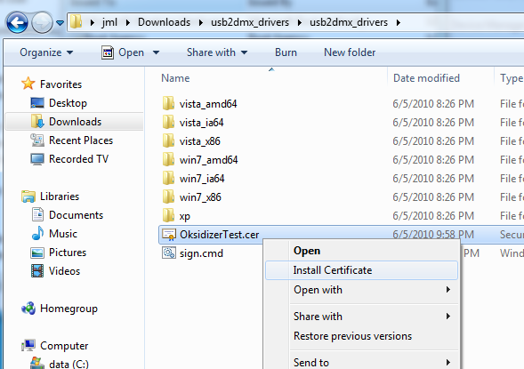
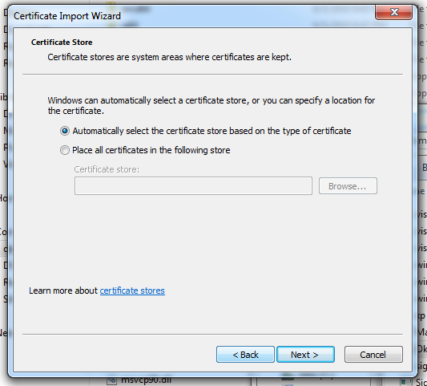
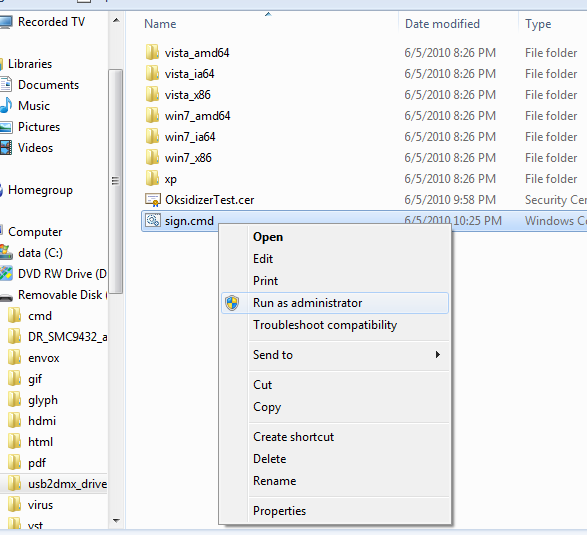
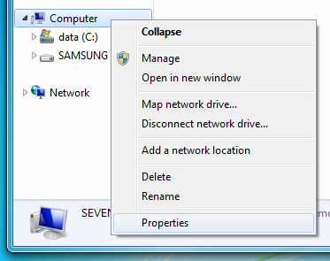
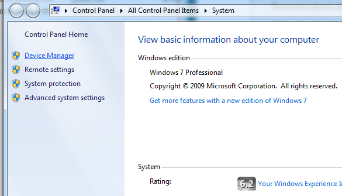
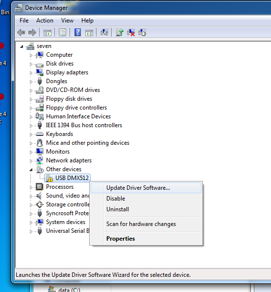
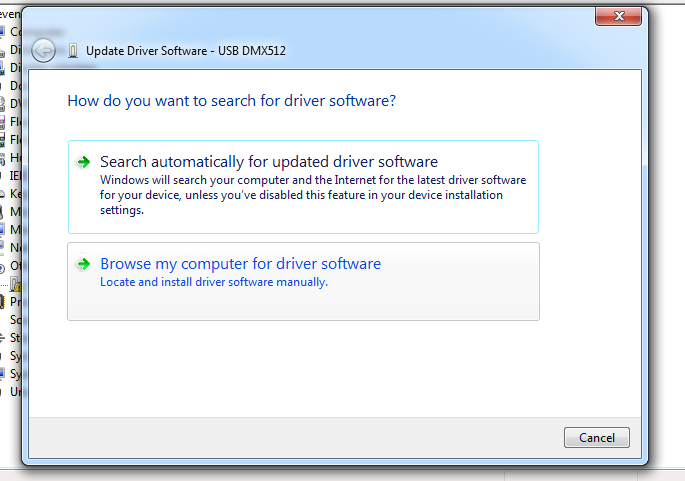
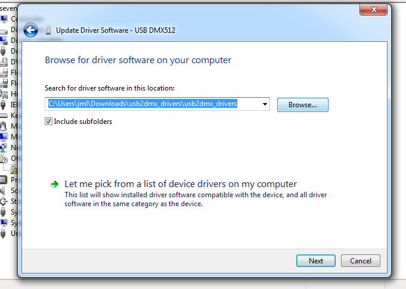
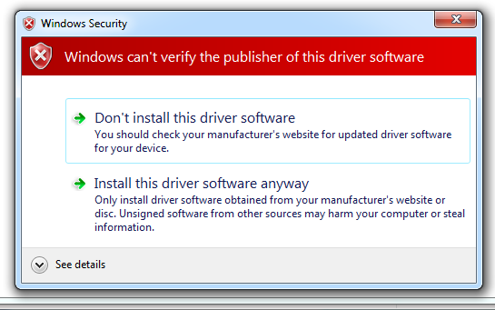
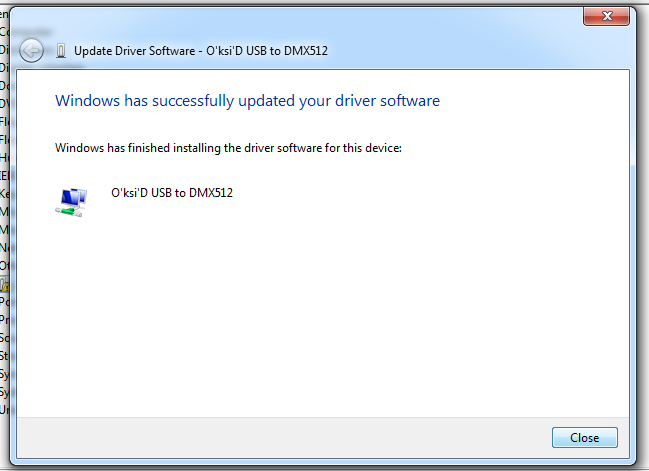

Oksidizer USB2DMX Windows 7 / Vista 64bit install instructionsSummaryThis procedure will :
InstructionsPlug the Oksidizer USB2DMX interface in your computer's USB port. Windows will try to install the divers automatically and it will fail. Extract the usb2dmx_drivers.zip files on your harddisk.  Open the Windows Explorer, and locate the "OksidizerTest.cer" file. Right click on it and select "Import Certificate".  Click on "Next".
Click on "Finish"
 Now right click on sign.cmd and select "run as administrator". Enter the administrator password if requested. Restart your computer.  Open the Windows Explorer, right click on the "Computer" icon and select "Properties".  Click on "Device Manager"  Right click on "USB DMX512" and select "Update Driver Software..."  Select "Browse my computer for driver software"  Click on "Browse" and locate the directory where you have extracted the usb2dmx_drivers.zip files. Click on "Next"  Select "Install this driver software anyway"  It's done, the drivers are successfully installed.
|